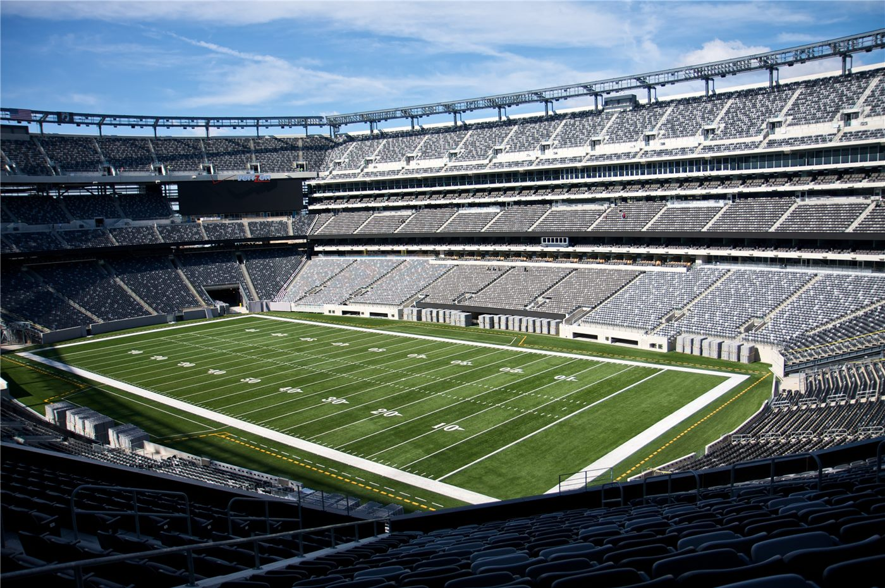

"2년 전보다 더 알고 친다"… 김도영, 또 한 번의 진화
프로야구 KIA 김도영이 타격 접근에서 한 단계 더 나아갔다는 평가를 받고 있다. 사령탑은 아시안게임 일정이라는 변수 속에서도 장타 생산을 기대하고 있다.
전금문 기자 · 2026.08.28
橋경제·문화·스포츠

현장에서는 김도영이 2년 전보다 상대 배터리의 의도를 읽는 능력이 좋아졌다는 평가가 나온다. 같은 구종에도 카운트에 따라 대응을 달리하는 장면이 늘었다는 것이다.
광고 문의 · 300×250타석에서의 선구와 배트 스피드가 함께 유지되면 장타 비율이 올라간다. 팀 입장에서는 중심 타선의 생산력이 안정된다는 의미가 있다.
변수는 국제 대회 일정이다. 아시안게임 기간에는 소속팀 경기 감각과 몸 상태 관리가 동시에 걸린다. 대표팀 차출 선수에게는 회복 시간이 부족해지는 문제가 따른다.
사령탑은 홈런 부문 성과에 대한 기대를 감추지 않았다. 다만 기록은 잔여 경기 수와 상대 투수 구성에 따라 달라진다.
야구에서 개인 기록은 팀 성적과 분리되지 않는다. 앞뒤 타순의 출루율이 받쳐 주지 않으면 장타 기회 자체가 줄어들기 때문이다.
출처·참고 (사실 확인용 — 본문은 직접 재작성)
· 朝鮮日報 2026-08-25 — https://www.chosun.com/sports/
· 朝鮮日報 2026-08-25 — https://www.chosun.com/sports/